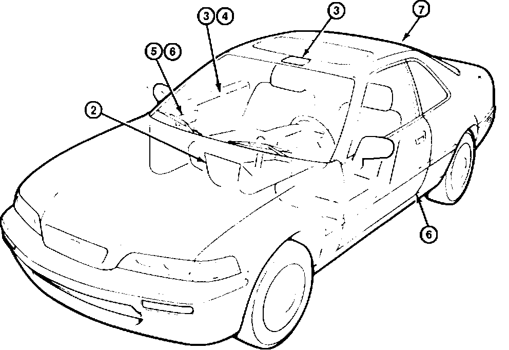

Interior - Squeak and Rattles: Overview
BULLETIN NO.92-031
YEAR
1991-92
MODEL
LEGEND
VIN APPLICATION
ALL
November 17, 1992
Legend Interior Squeak and Rattles
PROBABLE CAUSE AND CORRECTIVE ACTION
See appropriate page for each symptom.
NOTE:
Most of these noises occur during normal driving. Some occur only at certain minimum driving speeds or over certain road surfaces. Ask the customer to describe the driving conditions surrounding each noise.
PARTS INFORMATION
The following special materials are available through normal ordering channels.
EPT Sealer 5 mm thick: P/N 06991-SA5-000
EPT Sealer 3 mm thick: P/N 06990-SA5-000
EPT Slip Tape: P/N 06994-SA5-000
Wool Felt 1 mm thick: P/N 06993-SA5-000
WARRANTY CLAIM INFORMATION
In warranty:
The normal warranty applies.
Out of warranty:
Any repair performed after warranty expiration may be eligible for goodwill consideration by the District Service Manager. You must request consideration, and get the DSM's decision, before starting work.
Operation number, flat rate time, failed part number, defect code, and contention code are listed under each related corrective action.
INDEX

Location/type
CONSOLE
Creak From Center Console Cover
CEILING
Rubbing Noise at the Forward Ceiling Light
DOOR
Creak From Door Panel
Rattle From the Door Panel
Rattle From Interior Door Handle Trim Plate
Creak From Interior Door Handle
B-PILLAR
Creak From the Base of the B-pillar
BRAKE LIGHT
High Mount Brake Rattle